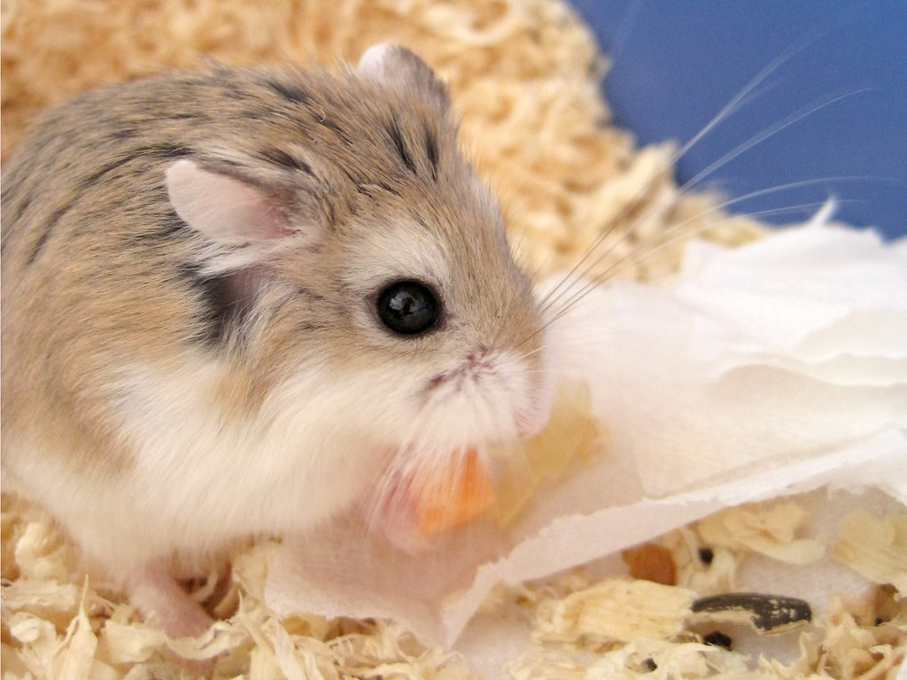
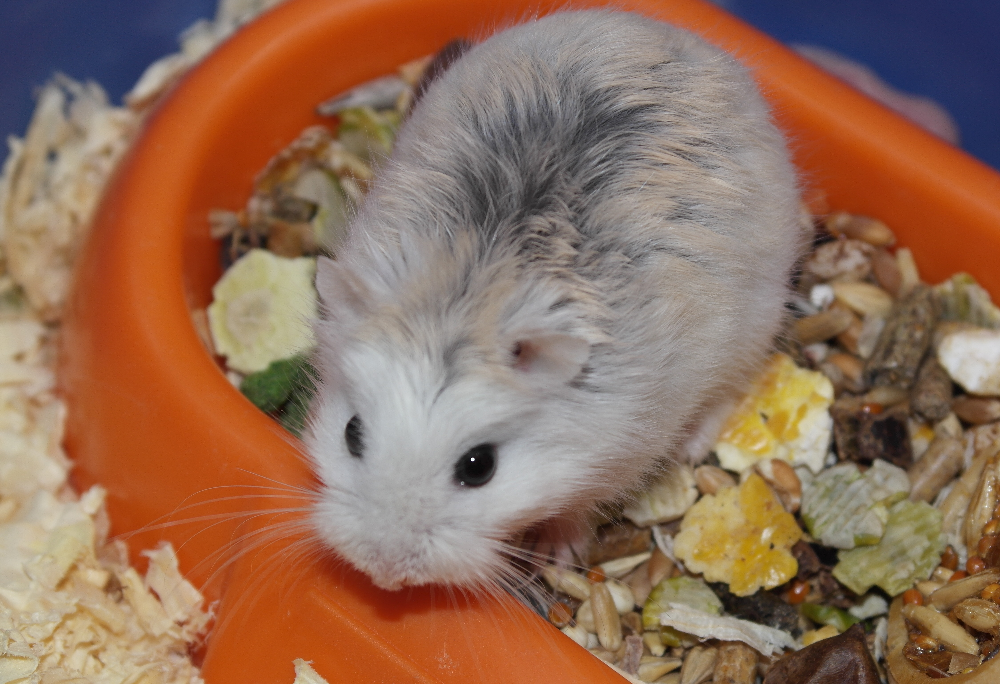

Хомяк Роборовского
Среди домашних питомцев не часто встретишь такого зверька, как хомяк роборовского. Однако этот грызун примечательный тем, что обладает самыми маленькими размерами среди подобных видов. В связи с этим, такой «пушистик» требует своеобразного содержания и ухода.
Внешний вид
Хомяк роборовского принадлежит к самым крошечным представителям своего вида. Распознать его можно по белым бровям и подошвам лап, покрытых мехом. А также по цвету глаз, которые у «робов» всегда черные. У хомяков роборовского встречаются разные окрасы. Чаще всего грызуны платинового цвета, но также могут быть белыми, пестрыми, агути (со светлым мехом на концах шерсти и более темным к основанию шкурки), цвета хаски и корицы. От окраски шерсти не зависит ни характер, ни пол грызуна. В дикой природе «пушистики» меняют цвет шерсти на зиму, облачаясь в белую «шубку».

Среда обитания
Их исторической родиной являются пустынные и полупустынные пространства Азии (территория Китая и Монголии), однако, в диких условиях грызуна можно встретить и в азиатской части РФ. Много представителей этого вида живет в предгорьях Тянь-Шаня.
Питание
Хомяк Роборовского всеяден, в природе он не брезгует ни растительной, ни животной пищей.

Как содержать в домашних условиях хомяка Роборовского?
Вернуться на главную страницу